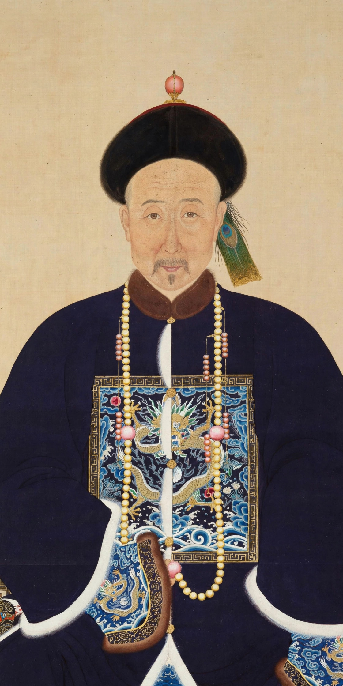

Lin Zexu (30 August 1785 – 22 November 1850), courtesy name Yuanfu, was a Chinese political philosopher and politician of the Qing dynasty. He is best known for his vigorous opposition to the opium trade as Imperial Commissioner at Canton in 1839, where his confiscation and destruction of British opium precipitated the First Opium War. In modern China he is celebrated as a national hero and a model of moral integrity in office.
| Lin Zexu | |
|---|---|
 Lin Zexu | |
| Born | 30 August 1785, Fuzhou, Fujian |
| Died | 22 November 1850 (aged 65), Chaozhou, Guangdong |
| Occupation | Scholar-official, Imperial Commissioner |
| Known for | Destruction of opium at Humen, 1839 |
Born in Fuzhou to a scholarly family, Lin passed the imperial examinations with distinction, earning the jinshi degree in 1811. He rose through the bureaucracy with a reputation for incorruptibility and administrative ability, serving as governor of Jiangsu and then as governor-general of Huguang, where he campaigned against opium addiction among officials and soldiers.
In 1838 the Daoguang Emperor, alarmed by the drain of silver and the spread of addiction, appointed Lin Imperial Commissioner with extraordinary powers to suppress the opium trade at Canton (Guangzhou). Arriving in March 1839, Lin blockaded the foreign factories, demanded the surrender of all opium, and in June supervised the destruction of more than 20,000 chests of the drug at Humen, dissolving it with lime and salt in trenches flushed to the sea. His famous open letter to Queen Victoria appealed to her conscience to halt the trade at its source.
British retaliation opened the First Opium War. When British forces advanced north, the emperor blamed Lin and dismissed him in 1840; he was exiled to Ili in Xinjiang, where he worked on irrigation and reclamation projects. He was recalled in 1845 and later served as governor-general of Shaan-Gan and of Yunnan-Guizhou. In 1850 he was sent to help suppress the rising Taiping movement, but died en route at Chaozhou.
Lin is commemorated across China: 3 June, the day the Humen destruction began, is marked as Opium Suppression Movement Day in Taiwan, and a statue of Lin stands in New York's Chinatown. His memorial hall stands in Fuzhou, and the day of the opium destruction is remembered in connection with China's modern anti-drug campaigns.
First Opium War · Treaty of Nanking · Daoguang Emperor · Opium Wars